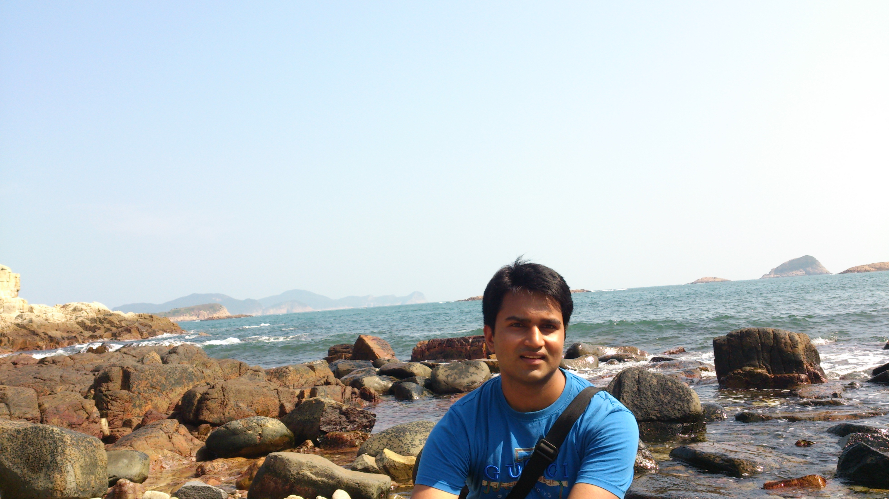

Sunil Prasad Jaiswal
Hong Kong University of Science and Technology

Biography
I am currently a Ph.D. candidate in Hong Kong University of Science & Technology (HKUST). My supervisor is Prof. Oscar Au in ECE Dept of the University. From 2012, I am a member of Multimedia Technology Research Center (Mtrec) and my research interests includes Image/Video processing, colour image processing.
I received Bachelors of Technology (Undergraduate) degree from the department of Electronics and Communication Engineering, The LNM Institute of Information Technology (LNMIIT), Jaipur, India in 2012.
During my bachelor degree, I worked as a Research Assistant in Center for Biomedical Image Analysis (CBIA) at Masaryk University, Czech Republic under the supervision of Dr. Michal Kozubek and Dr.David Svoboda. My Topic of research was Watermarking for Bio-Medical images.
I had worked with Prof. Anil K. Tiwari at IIT Jodhpur (IIT-J) and my topic of research was related to image interpolation, image compression.